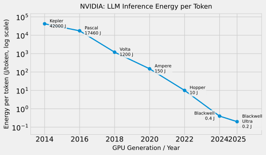

12 The Physical Limits of AI
So far, we have focused on algorithms, architectures and data. Deploying modern AI models at scale, however, quickly runs into physical limits: electricity, hardware and raw materials. In this chapter, we look at the energy cost of AI, using Ireland as a real-world case study.
12.1 Energy Efficiency
Training a large model can require enormous amounts of energy, but the problems really start once a model is deployed. Every request requires computation, and the total computational load grows with the number of users, the amount of text processed, and the amount of computation used to produce each answer.
The problem of precisely measuring energy consumption is complex. It is tempting to reduce this problem to a single number such as the energy used by one query or one token. This is useful for comparing systems, but obscures the bigger picture. We also need to consider the increasing scale of the user base, the increasing size of the models, the increasing size of the context windows, of reasoning, and the use of tools that call agents at scale.
So, let us start at the beginning with energy efficiency. NVIDIA has reported a dramatic reduction in the energy required to generate tokens across its GPU generations. For a particular GPT-MoE-1.8T inference workload, the reported figure falls from approximately 42,000 J/token on Kepler hardware in 2014 to 0.4 J/token on Blackwell in 2024, and 0.2 J/token on Blackwell Ultra in 2025. These are vendor measurements for a particular workload, rather than universal constants for LLMs.

Hardware and software have become vastly more efficient through specialised accelerators, quantisation, better memory systems, improved utilisation and model-level optimisation. More than speed or VRAM, the real metric of interest is often in terms of joules per token: ultimately, an AI system converts electricity into computation and useful output.
But we have to distinguish efficiency and total consumption. Whilst GPUs have become dramatically more efficient, the total amount of computation performed by all machines has continued to increase. This is a classic example of Jevons’ paradox: making a resource cheaper and more efficient to use often increases overall demand rather than reducing it.
In that respect, the advent of agentic AI has had a dramatic impact. While with your typical chatbot interface, a single user query triggers a single short answer with a single model invocation, agentic AI queries may result in many model calls, use several models, retrieve information, execute tools, generate and critique intermediate results, or run multiple agents in parallel. In other words, the number of computations has grown much faster than the number of users.
At this point it is easy to get lost in estimates of the energy cost of an individual token. A better question is much more physical:
How large is the electricity bill of the whole system?
Ireland provides a good case study.
12.2 Ireland as a real-world example
Ireland has become one of the world’s major locations for data centres. The growth is visible directly in the country’s electricity statistics. According to the Central Statistics Office, data-centre electricity consumption increased from 1.24 TWh in 2015 to 7.66 TWh in 2025. Over the same period, total metered electricity consumption increased from 24.6 TWh to 33.0 TWh.
The resulting growth rates are as follows:
| Electricity demand | Data-centre electricity | |
|---|---|---|
| Ireland — historical 2015–25 | +3.0%/yr | +20%/yr |
| EU — projected, Shift Project | ~+2%/yr | ~+7%/yr |
| EU — projected, IEA | ~+2.3%/yr | ~+9.2%/yr |
| Global — projected, IEA | — | +15%/yr |
The Irish figures are historical compound annual growth rates. The European and global figures are projections and are therefore much more uncertain. The Shift Project and IEA also use slightly different geographical definitions.
The key observation is that data-centre electricity demand is growing much faster than electricity demand as a whole. The IEA estimates that global data-centre electricity consumption could rise from about 415 TWh in 2024 to around 945 TWh in 2030, an increase of roughly 15% per year. The IEA also stresses that data centres can be built in a few years, whereas the energy infrastructure required to supply them often takes much longer to plan and construct.
Ireland is an early example of this phenomenon. By 2025, data centres accounted for 23% of all metered electricity consumption in the country. The CRU reports that data centres accounted for 85% of the overall growth in electricity demand between 2015 and 2023. This does show how dominant this new load has become in the national electricity balance.
12.3 Can the energy supply follow?
If data centres are consuming an additional 7.7 TWh per year in Ireland, where does that electricity come from?
The answer is not simply “renewables” or “gas”. Ireland has an interconnected electricity system in which generation, storage, imports and exports continuously balance supply and demand.
The latest CSO figures show a change in this balance. In 2025, Ireland’s main electricity generators produced 29.3 TWh, almost unchanged from 2024. At the same time, net electricity imports reached 6.13 TWh, compared with 3.28 TWh in 2023. Gross imports were 6.61 TWh and exports were 0.48 TWh.
| 2025 electricity balance | TWh |
|---|---|
| Domestic generation | 29.34 |
| Imports | 6.61 |
| Exports | 0.48 |
| Net imports | 6.13 |
| Storage discharge | 0.42 |
| Grid supply | 35.88 |
| Data-centre metered consumption | 7.66 |
Source: CSO Electricity Supply by Source 2025 and CSO Data Centres Metered Electricity Consumption 2025.
There is a coincidence here: data centres consumed 7.7 TWh, while Ireland had 6.1 TWh of net electricity imports.
Not all of the 6.1 TWh, however, went to data centres. In 2025, wind provided about 40% of Ireland’s domestic electricity generation, and wind and solar output varies widely with the weather. Across individual days in February 2025, the renewable share of generation ranged from 11% to 86%, largely because of changes in wind. Part of the need for imports is therefore tied to the transition to variable renewables.
We can still see the scale of the data-centre load with a simple counterfactual. Subtracting 7.66 TWh from total metered electricity demand in 2025 leaves about 25.3 TWh, well below the 29.3 TWh generated domestically. Of course, a real grid does not re-balance by simple subtraction, but the numbers show how much headroom data centres have absorbed.
The deeper constraint is not just annual energy (TWh), but real-time power (MW or GW). Energy tells us how much electricity is used over a year; power is the rate at which it is produced and consumed at any given instant. A grid must match generation and demand continuously, second by second, to keep its frequency stable. In power terms, 7.66 TWh over a year corresponds to an average load of about 875 MW running around the clock.
A windy afternoon does not by itself power a data centre on a still evening: when wind output drops, the gap has to be met by dispatchable generation, storage or interconnectors, and neighbouring grids can be short of capacity under the same weather conditions. Sudden changes in such a large load are also a stability risk. Following a transient grid fault on 8 May 2025, EirGrid and SONI reported that data-centre demand dropped by 387 MW almost immediately, creating a system-wide imbalance that operators had to absorb (see the EirGrid and SONI information paper and the EirGrid Grid Code).
Electricity policy is starting to reflect both constraints. The CRU’s 2025 connection policy requires new data centres to bring generation or storage matching their requested maximum import capacity (addressing real-time power), alongside meeting at least 80% of their annual demand from additional renewable projects in Ireland (addressing annual energy). A large computational load can no longer simply be plugged into the grid without accounting for where both the energy and the flexibility will come from.
12.4 Ireland as a warning
Ireland is not the only country facing this problem. It is an early and visible example of a broader transition.
The IEA projects global data-centre electricity consumption to grow by around 15% per year between 2024 and 2030. In Europe, it expects data-centre consumption to increase by more than 45 TWh, or around 70%, over the same period. The overall electricity system is growing much more slowly. This does not mean that the trajectories can continue indefinitely at those rates: eventually physical, economic and grid constraints become binding.
Ireland therefore provides a good example of things to come. The country has simultaneously pursued rapid growth in digital infrastructure and rapid transition to wind and solar electricity. The equation is complex at scale.
The Irish example shows that, even if at the level of an individual GPU, energy efficiency has been improved by orders of magnitude, at the level of an entire country, the relevant quantity is not joules per token but terawatt-hours of electricity and the infrastructure required to supply them.
And at the moment, simple maths and physics tell us that the current AI growth is simply not sustainable globally.
And this is just for electricity! We would also need to discuss the mining of raw materials that goes with it.
12.5 Takeaways
- Hardware energy efficiency has improved by five orders of magnitude (from around 42,000 J/token on Kepler to 0.2 J/token on Blackwell Ultra), yet total electricity use keeps rising, a classic case of Jevons’ paradox amplified by multi-step agentic workloads.
- Data-centre electricity demand is growing much faster than overall demand. In Ireland, data centres reached 23% of metered electricity in 2025 and accounted for 85% of demand growth between 2015 and 2023.
- Grids must balance real-time power (MW/GW), not just annual energy (TWh). Serving a continuous ~875 MW load, and absorbing sudden 387 MW drops during faults, is difficult when a large share of supply comes from variable wind and solar.
- New connection policies, such as the CRU’s 2025 rules, increasingly require data centres to bring both renewable energy and firm generation or storage capacity.